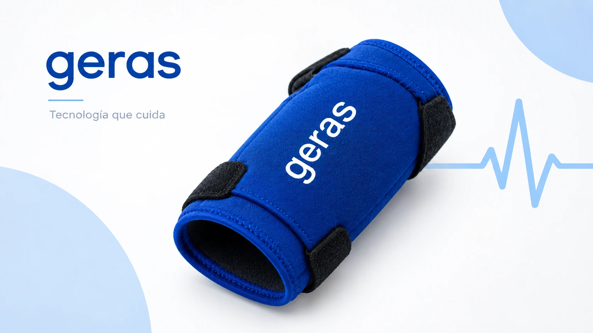
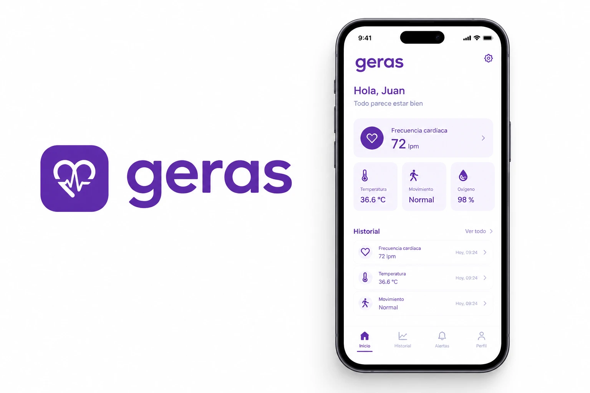
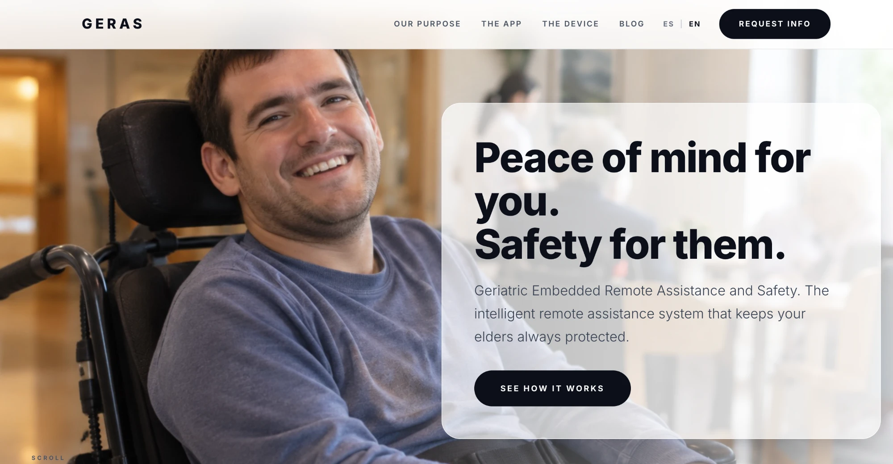

Programming Languages
- ☕ Java
- 🐍 Python
- ©️ C
- ✈️ Ada
- 🗃️ SQL
Open to internships & junior roles
> Computer Engineering Student_
Computer Engineering student at the Universidad Politécnica de Madrid. I build systems that not only work, but are well-founded — from requirements and modeling to clean code and solid technical documentation.
$ whoami
pablo.foronda
$ cat profile.json
{
"university": "UPM · Madrid",
"degree": "Computer Engineering",
"focus": [
"embedded", "real-time",
"robotics", "vision"
],
"languages": ["ES", "EN"]
}
$ ▋Passionate about engineering, especially when it comes to solving complex problems through robust design and clean code.
Throughout my university studies, I have focused on building projects that not only work, but are also well-founded. I have experience across the full development cycle: from requirements gathering and diagram-based modeling (such as in flight simulation systems) to code implementation and writing detailed technical reports.
I firmly believe that a good engineer does not just write lines of code, but knows how to communicate their solutions. That is why in this portfolio you will find both my software repositories and the academic documentation behind every technical decision.
My current goal is to apply this knowledge in a professional environment, keep learning new architectures, techniques and patterns designed to solve complex problems, and add value from day one in development teams.
Breaking down complex problems into robust, well-designed solutions.
Requirements, modeling, implementation, testing and documentation.
Every technical decision backed by detailed reports.
New architectures, patterns and techniques, every semester.

IoT BackendGeriatric Embedded Remote Assistance and Safety. Backend that ingests biometric telemetry from a wearable bracelet over MQTT, evaluates clinical rules (falls, inactivity, SpO₂, heart rate) and escalates alerts through a REST API and Telegram.

AndroidAndroid client for the GERAS system. Caregivers can see bracelet status and vital signs, acknowledge and resolve alerts, pair new devices and tune each person's clinical thresholds, with patient names kept only on the device for privacy.

WebBilingual (ES/EN) landing page presenting GERAS. A single self-contained page with scroll-story sections and hash routing, served by nginx inside a hardened Docker container.
 Embedded
Embedded
Monitoring and Actuation System (SMA) for a desk lamp with air quality and noise sensors, plus lighting/ventilation control on a PIC16F886 microcontroller.
 Real-Time
Real-Time
Design and modeling of a flight control system, integrating critical-altitude alert management and detailed sequence diagrams for descent scenarios.
 HW / SW
HW / SW
Adaptation of the flight simulation software (FSS) to an embedded system on a Raspberry Pi. Implementation of HW/SW integration for real-time physical control of actuators.
 Robotics
Robotics
Implementation of a ROS 2 control node for the autonomous navigation of a line-following robot in the Webots physics simulator.
 Vision
Vision
Computer vision system for emotion classification based on facial geometry (topology) heuristics, using the MediaPipe Face Mesh and OpenCV libraries.
 Networking
Networking
Design and simulation of complex network topologies using Cisco Packet Tracer, including advanced configuration of routers, switches and end devices.
 Security
Security
Solutions to various challenges and technical reports on mini-projects related to systems and network auditing and security.
 Data
Data
Automation script for bulk extraction of biomedical articles and metadata from the PubMed database using HTTP requests.
 Personal
Personal
Development and deployment of this personal portfolio as a central repository for university coursework and professional projects.
I'm looking for opportunities to apply what I've learned and keep growing. Whether you have a question, an offer or just want to say hi, my inbox is open.